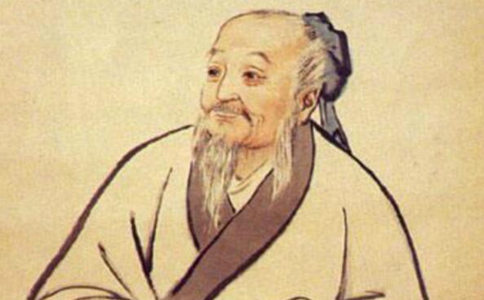

杜牧《江南春》中一句“南朝四百八十寺，多少楼台烟雨中”，陶弘景正是
陶弘景纵有博学之才，却淡泊自然，虽曾在朱门，偏喜独居一室，罕接外物，唯以披阅为务。遂于齐永明十年（492年），上表辞官，退隐江苏句容句曲山（茅山），不与世交，自称“华阳隐居”。
502年，萧洐初即位时，国号未定，陶弘景引诸谶记，皆成“梁”字，遂立国号为“梁”。举行大典即位时日，亦由陶弘景所择，最后梁武帝选择四月初八
因其深处山林之远，仍知时运之变，悯涂炭之苦，得帝王之敬重，时人称之为“山中宰相”。
陶弘景性好著述，隐居山林，如枯池之鱼游于清泉，正好潜心著作。四十余年间，著书满家，内容所涉广泛，遍及各家。因其文章初期无人编录，直至陈武帝时江总始整理，散落颇多，又多有失佚，如今可见，更是残缺。然《四库未收书目提》中言，其文集残本，“若夫残羹剩饭，实足以沾溉后人”。尤其《真诰》《登真隐诀》《养性延命录》等，在道教史上占有重要的地位。因此，陶弘景被立为道教上清派第九代祖师。因其居茅山，而有“茅山宗”创始人之功，故有“玄中之董狐，道家之尼父”之称。其中《本草集注》《药总诀》《肘后百一方》《效验方》《辅行诀脏腑用药法要》等，亦成为医药史上经典之作，千百年来，一直指导着无数医者行医济世。
除此之外，他晚年又以“胜力
盖陶弘景一生隐居以求其志，纵使有世人百千赞誉、千古之名，然而于
陶弘景为江南士族后代，祖父陶隆谙习医术，济世救人，一心向佛。陶弘景母亲更是精心
其年九月，母受有娠，仍梦见一小青龙，忽从身中出，直东向而升天，遂视之，不见尾。既觉，密语
可见其母亲心中真切所愿，则是陶弘景能
陶弘景二十六岁时，父亲为妾所害去世；二十九岁时，母亲亦离世，他辞官守孝三年。陶弘景果如其母所言，不食荤腥，不近女色，终身未娶。
当时信道教而后归依
故回茅山之后，陶弘景便在茅山建塔造像、写经绘佛，诚心礼佛，精进
常以敬重佛法为业，但逢重僧，莫不
由此观之，陶弘景自誓受戒回山之后，诚依佛法修行。
陶弘景诵习《
既言陶弘景之净土信仰，不得不提他与
529年，昙鸾大师注解《大集经》未半而感气疾，遂从北魏前往梁朝求访。因时南北对峙，遂先诣梁武帝，说佛法精义，为武帝称赏。帝问所由来，昙鸾大师回答：“欲学佛法，恨年命促减，故来远造陶隐居，求诸仙术。”梁武帝曰：“此傲世遁隐者，比屡征不就，任往造之。”陶弘景归隐林泉，不与人交，就连弟子门人亦少接近；晚年独居华阳馆，更绝人事，故常人难得一见。然当昙鸾大师写信与他后，他立即以弟子之称回信，诚心期盼大师到来。信曰：
云朔耳闻音声，兹晨眼受文字 ，或由顶礼岁积，故致真应来仪。正尔整拂藤蒲，采汲华水，端襟俨思，伫聆警锡也。弟子华阳陶弘景和南。（《辩正论。卷六。内九箴篇第六》，又见《广弘明集。卷十三》）
虽是昙鸾大师为求仙方而来，但陶弘景早闻昙鸾大师名声，且将大师来访视为顶礼岁积而感，对昙鸾大师祈盼之心，溢于信中。昙鸾大师到山之后，两人欣然相谈。最后陶弘景以仙方十卷，酬谢远意。
昙鸾大师遂动身返回北魏，欲依方修炼，途中逢菩提流支，问曰：“佛法中颇有长生不死法胜此土佩经者乎？”留支唾地曰：“是何言欤！非相比也。此方何处有长生不死法，纵得长年，少时不死，终更轮回三有耳。”即以《观经》授之，曰：“此大仙方，依之修行，当得解脱生死也。”昙鸾大师顶礼接受，遂将陶弘景所赠仙方，付之一炬。从此归心净土，一心弘扬净土，并注解天亲菩萨《往生论》，成《往生论注》，直将弥陀誓愿、天亲衷怀，彻底圆彰，和盘托出，显彰口称佛名之行，阐释净土他力之理。
昙鸾大师得遇净土无上之法，立将仙经烧毁，绝非对陶弘景不敬，而是得知纵使长寿延年，不过转瞬而逝，不出生死，终究
陶弘景精通道家养生延年之术，但深知仙方未有不死之法，感人生终不免一死，终将轮回三途，故晚年更潜心佛法，遂作往生文，求生西方净土，证无量寿之身。
至于陶弘景是否亲得昙鸾大师所传净土思想，是否得见昙鸾大师《往生论注》，不得而知。不过，昙鸾大师回北魏之后，大力弘传净土，自行化他，北魏皇帝称之为“神鸾”，名闻遐迩，远扬江南，梁武帝亦常向北方顶礼大师，并号之为“昙鸾菩萨”。可见，昙鸾大师弘扬净土之盛名，南北皆传；陶弘景对昙鸾大师礼敬有加，自当乐闻其法。
梁武帝大同二年（536年），陶弘景年逾八十，容颜依旧如壮年，无有病苦，预知时至，并一一嘱咐其门人弟子临终后事，不用沐浴，并通以大
无疾，自知应逝，逆克亡日，仍为告逝诗。大同二年卒，时年八十一。颜色不变，屈伸如常，香气累日，氛氲满山。遗令：“既没不须沐浴，不须施求，止两重席于地，因所着旧衣，上加生裓裙及臂衣鞋冠巾法服。……通以大袈裟覆衾蒙首足。明器有车马。道人道士并在门中，道人左，道士右。”弟子遵而行之。
自幼有意归隐山林，为世人尊为“山中宰相”、道家祖师，而最终归依
原文标题：【人物典故】一代隐士奇才的净土缘
文章转自微信公众号：净宗书院